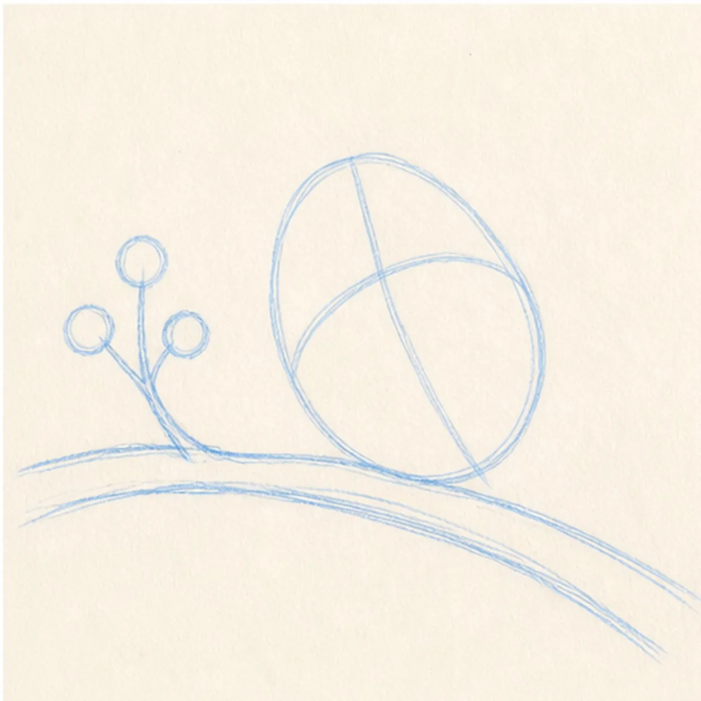
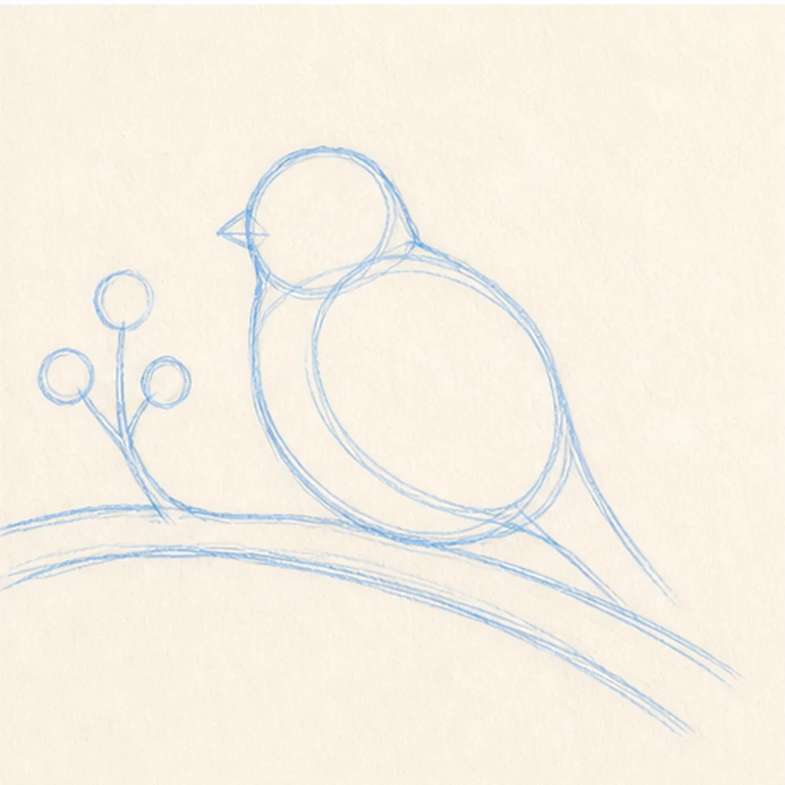
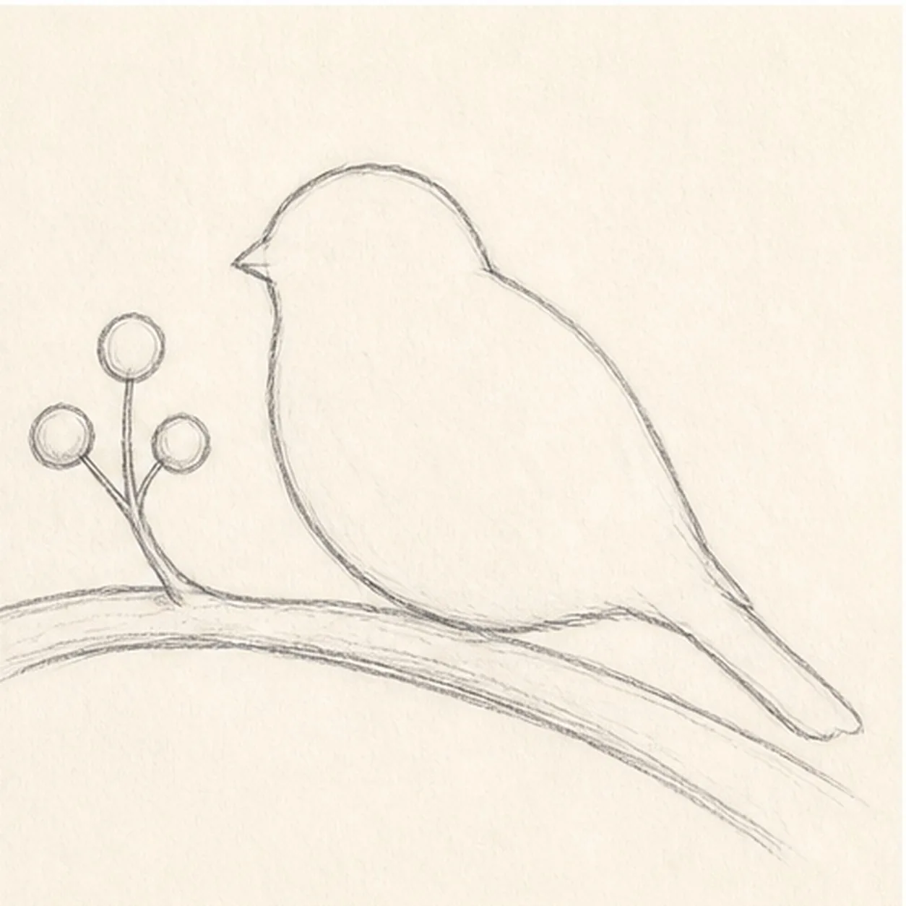
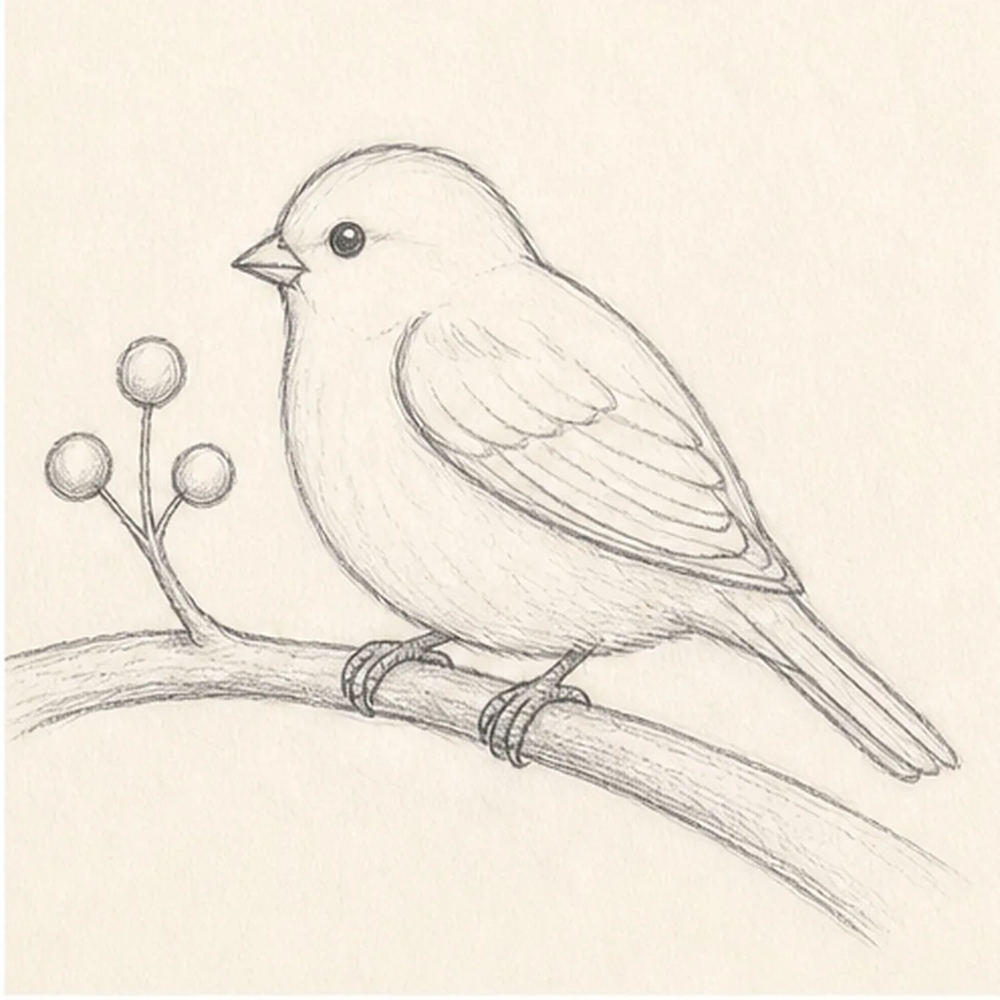
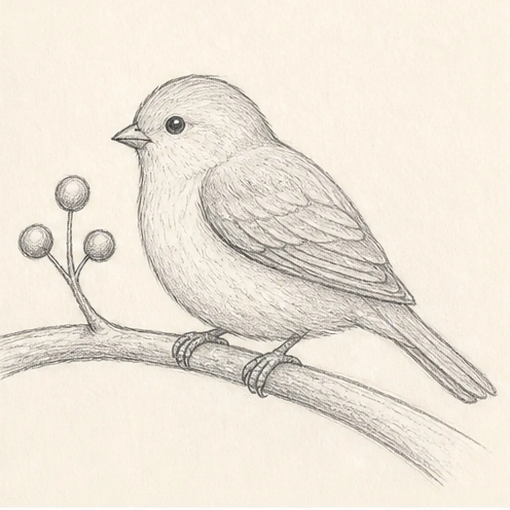

From the archive
Let's draw a sparrow on a branch
Treat this as one small practice round: build the subject lightly, notice the shapes, then darken only the lines that help the finished sketch.
-
01

Place the perch
Draw a gently curved branch, a short berry twig, three small berry circles, and one light body axis above the branch.
Sketch tip: Ghost the branch in one relaxed sweep before committing. A quiet curve gives the bird somewhere convincing to perch.
-
02

Build the bird
Add one large oval for the body and a smaller overlapping oval for the head, keeping both centered over the established branch.
Sketch tip: Compare the two ovals before refining. The head should feel clearly smaller, but not pinched against the body.
-
03

Refine the silhouette
Turn the construction into a rounded back, soft belly, and a tapered tail that follows the same gentle diagonal.
Sketch tip: Rotate the page for the long back curve. One deliberate pull reads more naturally than many scratchy corrections.
-
04

Add the landmarks
Draw the small beak, round eye, layered wing, two feet, and tail divisions on the established sparrow shape.
Sketch tip: Keep the wing edge lighter than the outside contour. That small line-weight difference helps it sit on the body instead of cutting through it.
-
05

Suggest the feathers
Add short feather marks and light graphite shade to the existing wing, belly, branch, and berries.
Sketch tip: Let each shading stroke follow the form: curve around the belly and pull along the branch. Directional texture makes simple shapes feel solid.
-
06

Settle the pencil finish
Darken the keeper contours and clarify the existing beak, eye, wing, feet, branch, berries, and gentle graphite shading.
Sketch tip: Stop before adding a nest, sky, or extra birds. The perch, berry twig, and one calm sparrow already make a complete little scene.